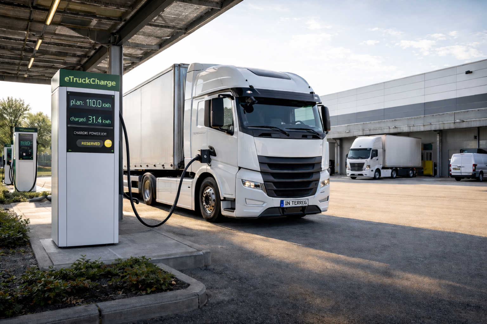
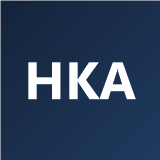
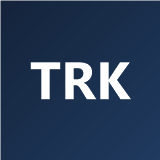
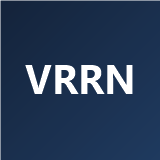
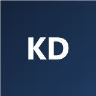
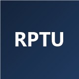
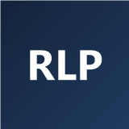
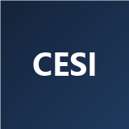
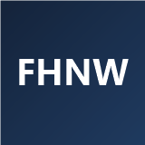

Interreg Oberrhein 2021–2027 · Priorität B, OP3
E-Mobilität grenzenlos – Föderierter Ladepark für nachhaltigen Güterverkehr am Oberrhein
eTruckCharge untersucht, wie sich heute schon an gewerblichen Standorten vorhandene Ladekapazitäten künftig grenz- und unternehmensübergreifend nutzen lassen – für einen sicheren, planbaren Umstieg der trinationalen Logistikbranche auf elektrische Lkw.
- 07/2026 – 06/2029Projektlaufzeit
- 1.311.414,60 €EU-Förderung (EFRE)
- 2.866.829,21 €Gesamtbudget
- 16 Partneraus Deutschland, Frankreich, Schweiz
Hintergrund
Über das Projekt
Der zukunftsfähige Güterverkehr auf der Straße muss kürzere Ladezeiten, geringere Kosten und ökologische Nachhaltigkeit miteinander vereinen. Allein in Deutschland verbraucht der Straßengüterverkehr jährlich rund 15 Millionen Tonnen fossile Brennstoffe. Batterieelektrische Lkw erreichen heute bereits Reichweiten von über 500 km und lassen sich in weniger als einer Stunde von 20 % auf 80 % Ladezustand aufladen.
Der grenzüberschreitende Güter- und Warenverkehr am Oberrhein läuft überwiegend über die Straße – unter anderem über die Autobahnen A4, A6/A36 und A5. Eine jederzeit zugängliche, leistungsstarke Ladeinfrastruktur für E-Lkw an diesen Verkehrsknoten fehlt in der Region bislang.
eTruckCharge setzt genau hier an: Im Projekt wird erforscht und entwickelt, wie sich die heute und in naher Zukunft an gewerblichen Standorten – Logistikzentren, Lagerhallen, Fahrzeugdepots, Industrieparks – vorhandenen Ladekapazitäten in einem grenz- und unternehmensübergreifenden „föderierten Ladepark“ nutzbar machen lassen.
Was wir vorhaben
Projektziele
Unternehmen mit eigenen Ladestationen können diese über ein im Projekt entwickeltes IT-System kontrolliert für Geschäftspartner und weitere Nutzer öffnen und buchbar machen. Speditionen können so Ladekapazitäten entlang ihrer Routen vorreservieren und grenzüberschreitende Touren sicher und optimiert planen.
Das Projekt entwickelt zudem ein intelligentes Energiemanagement für die Ladestandorte: KI-gestützte Prognose und Steuerung des Ladebedarfs (bis zu 1 MW Leistungsbedarf je Standort), Berücksichtigung von Strommarktpreisen und Netzverträgen sowie fahrzeugseitiger Anforderungen wie Ladezustand und Zielort.
Ein zentrales Anliegen ist die Sicherheit des Gesamtsystems – auf Daten- wie auf Infrastrukturebene. Dazu entwickelt eTruckCharge ein kollaboratives System zur Erkennung von Angriffen und Anomalien, das auf föderiertem Lernen basiert und ohne den Austausch sensibler Rohdaten auskommt.
Ergebnisse
Was das Projekt konkret liefert
Mittel- und unmittelbare Ergebnisse, die während und nach der Projektlaufzeit zur Verfügung stehen.
Softwaresystem für den föderierten Ladepark
Web-basiertes System der Hochschule Karlsruhe: Ladestationen mehrerer Unternehmen werden gebündelt erfasst und können von berechtigten Dritten für eine bestimmte Dauer reserviert werden.
KI-Modelle & digitaler Zwilling
Föderiert trainierte Modelle sagen Belegung, Ankunfts-/Abfahrtszeiten und Lastspitzen voraus, ohne dass Rohdaten zentral zusammengeführt werden müssen. Ein digitaler Zwilling bildet den Ladepark in Echtzeit ab.
Ladealgorithmen der RPTU
Optimierte Ladeplanung und Schnellladeprofile, validiert in einer Power-Hardware-in-the-Loop-Umgebung; als Open-Source-Softwarepaket mit standardisierten Schnittstellen nutzbar.
Sicherheit & Resilienz
Kollaboratives Intrusion-Detection-System auf Basis föderierten Lernens für den Schutz der vernetzten Ladeinfrastruktur, Fahrzeuge und Systeme.
Nutzen
Zielgruppen & Wirkung
Von den Projektergebnissen profitieren mittelfristig potenzielle Anwender aus der Logistikbranche am Oberrhein („first mover“) sowie zukünftige Anbieter skalierbarer Lösungen aus der Region, einschließlich Start-ups.
Darüber hinaus kann das Projekt dazu beitragen, die Oberrhein-Region als Vorreiter bei der systematischen Einführung von Elektrofahrzeugen im grenzüberschreitenden Güterverkehr zu positionieren – mit positiven Effekten für Luftqualität, CO₂-Bilanz und die Unabhängigkeit der Region von Öl-Exportländern.
Forschung
Publikationen
Wissenschaftliche Publikationen aus dem Projekt eTruckCharge werden an dieser Stelle veröffentlicht, sobald sie vorliegen.
Aktuelles
News
Neuigkeiten rund um eTruckCharge – etwa Projektstart, Zwischenstände und Ergebnisse – werden hier künftig als Zeitleiste dargestellt.
Konsortium
Projektpartner
16 Partner aus Deutschland, Frankreich und der Schweiz gestalten eTruckCharge gemeinsam.
Deutschland
-
Hochschule Karlsruhe
Konsortialleiter – vertreten durch das Institut für Datenzentrierte Softwaresysteme (IDSS)

-
TechnologieRegion Karlsruhe GmbH

-
Verband Region Rhein-Neckar

- Walter Schmitt GmbH
-
Fachspedition Karl Dischinger GmbH

-
RPTU – Lehrstuhl für Mechatronik in Maschinenbau und Fahrzeugtechnik

-
Land Rheinland-Pfalz
Ministerium des Innern, für Integration und Verkehr

Frankreich
-
CESI – Campus de Strasbourg

- CHARGEMAP SAS
- Chambre de Commerce et d'Industrie Alsace Eurométropole
- Eurométropole de Strasbourg
Schweiz
-
Fachhochschule Nordwestschweiz
Institut für Mobile und Verteilte Systeme (IMVS)

- Schweizerische Eidgenossenschaft NPR
- Kanton Basel-Landschaft Interreg
- Kanton Basel-Stadt Interreg
- Kanton Solothurn Interreg
Kontakt
Ansprechpartner
Hochschule Karlsruhe – University of Applied Sciences
Konsortialleiter eTruckCharge, vertreten durch das Institut für Datenzentrierte
Softwaresysteme (IDSS)
Moltkestraße 30, 76133 Karlsruhe
www.h-ka.de
Konkrete Ansprechpartner:innen und Kontaktdaten für eTruckCharge werden hier ergänzt, sobald sie vorliegen.